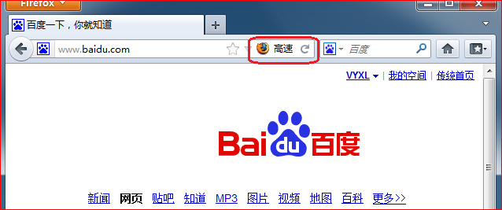
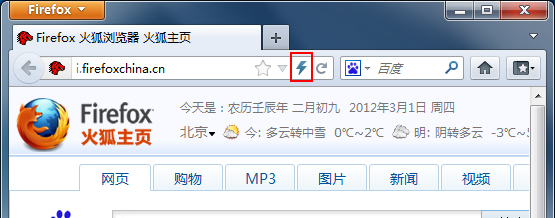

A Firefox add-on let you switch to IE engine in one click. It's time to give up your Internet Explorer.


Fire-IE is a standard Firefox addon. Download the addon file fireie-0.3.0.xpi and open with Firefox to install it.
For 64bit version, click here fireie-0.3.0-64.xpi.
Wei Deng
Yifan Wu (patrick@fireie.org)
Yuan Xulei (hi@fireie.org)
You can download this project in either zip or tar formats.
You can also clone the project with Git by running:
$ git clone git://github.com/yxl/Fire-IE